전제: Next.js 프로젝트 로컬 개발이 완료된 상태
총 2파트 · 11단계 · 약 20~30분
무료 플랜 · 신용카드 불필요 · PostgreSQL 호환
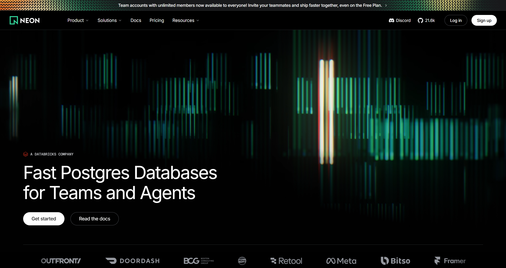
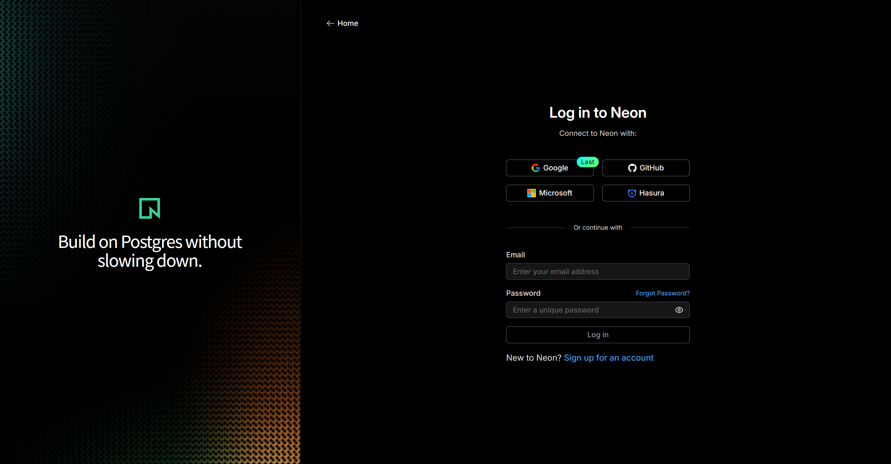
클릭하면 크게 볼 수 있어요
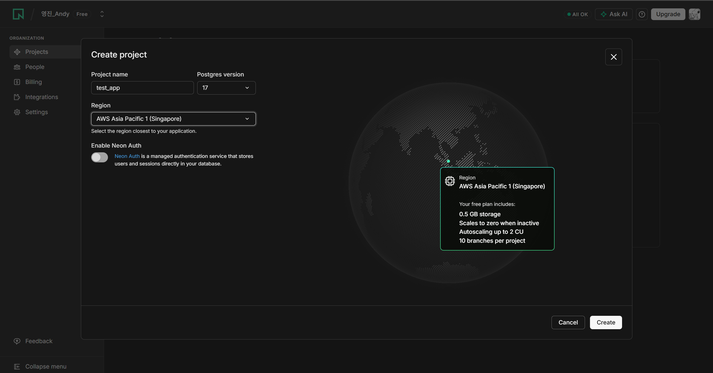
클릭하면 크게 볼 수 있어요
URL 두 개를 순서대로 복사합니다
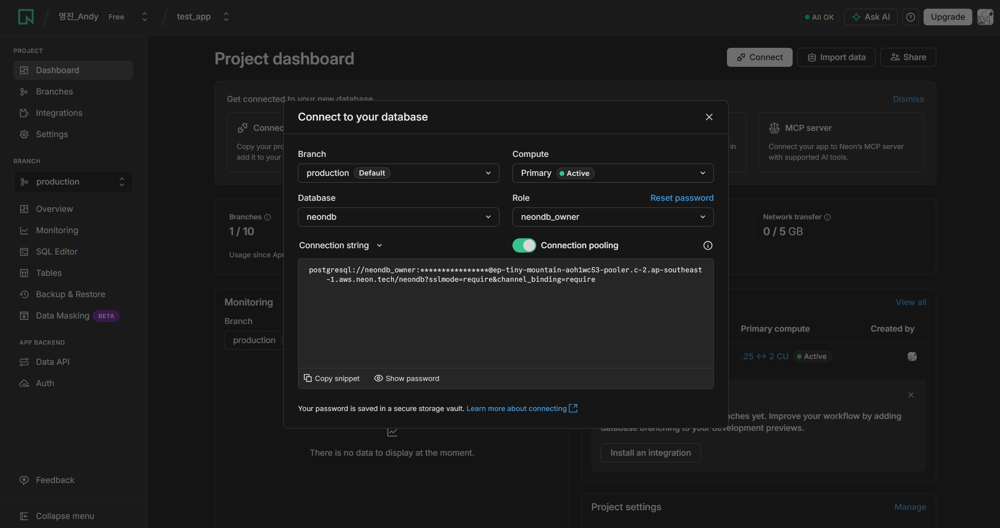
토글로 Pooled ↔ Direct 전환
{{POOLED_URL}} 과 {{DIRECT_URL}} 두 곳만 3단계에서 복사한 값으로 교체 후 붙여넣기
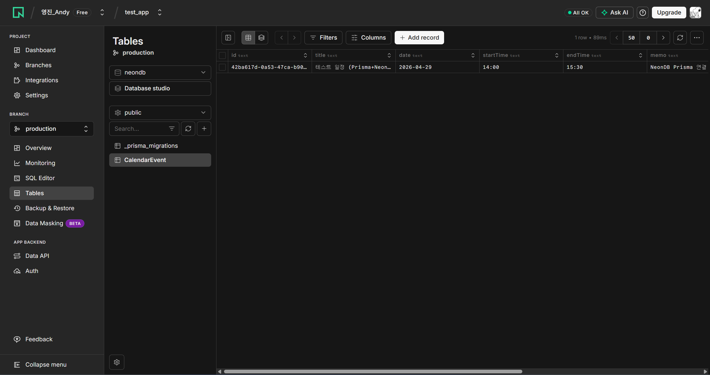
완료 후 NeonDB Tables 탭에서 확인
GitHub push 한 번 → 이후 자동 재배포
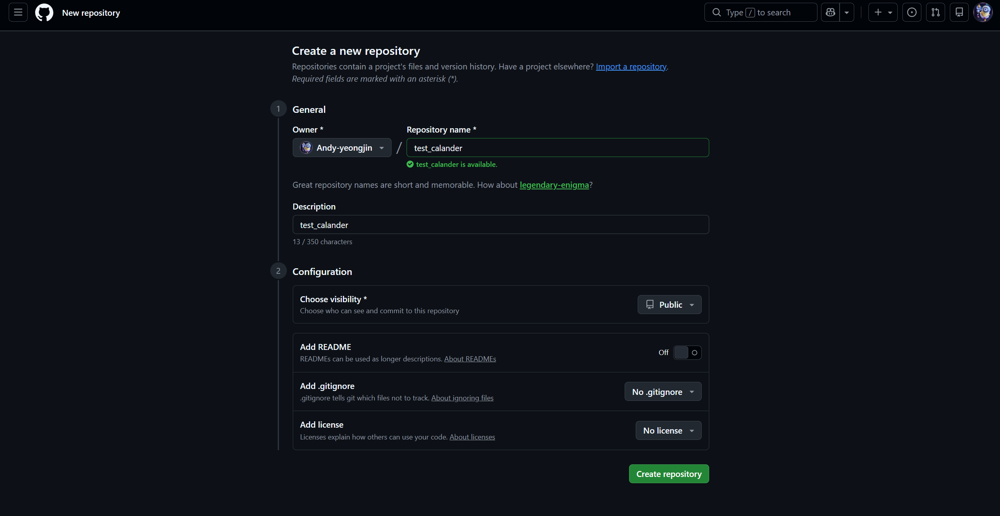
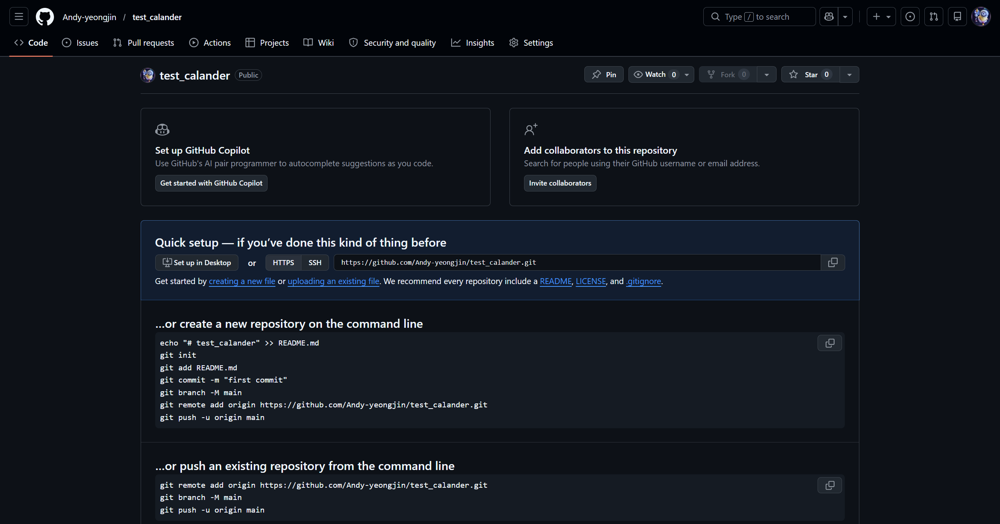
생성 후 이 URL을 복사해두세요
{{REPO_URL}} 만 10단계에서 복사한 저장소 URL로 교체 후 붙여넣기
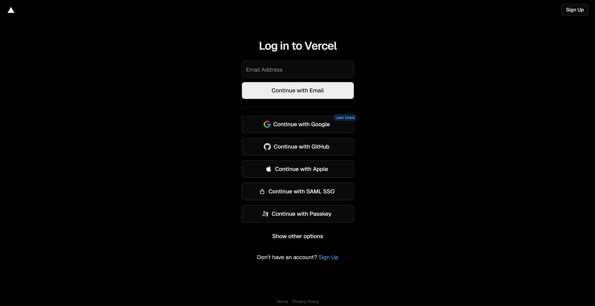
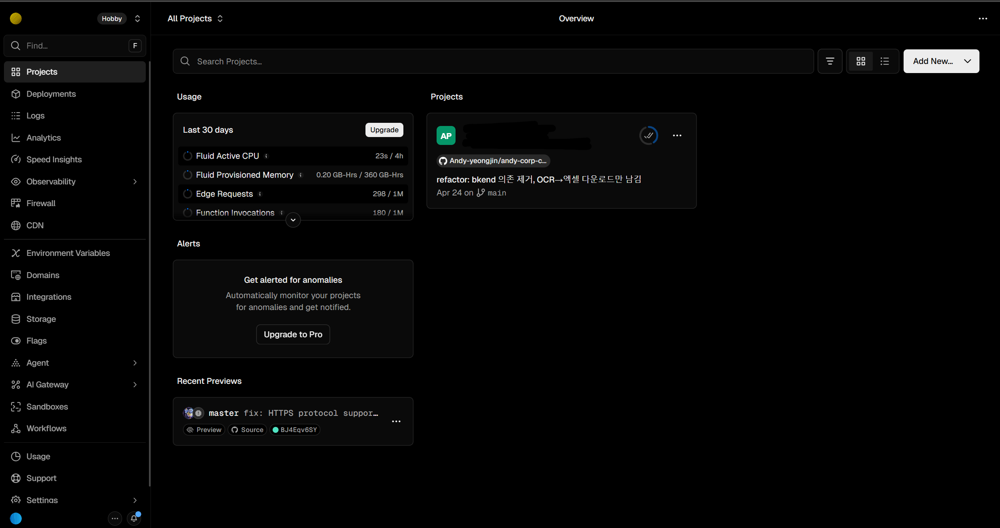
클릭하면 크게 볼 수 있어요
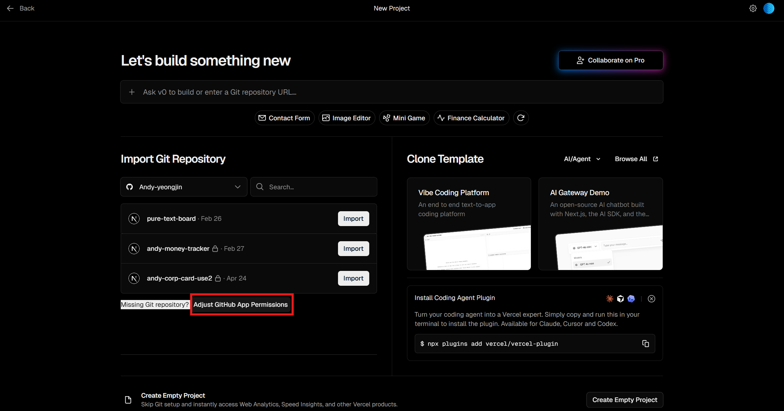
① Configure 링크 클릭
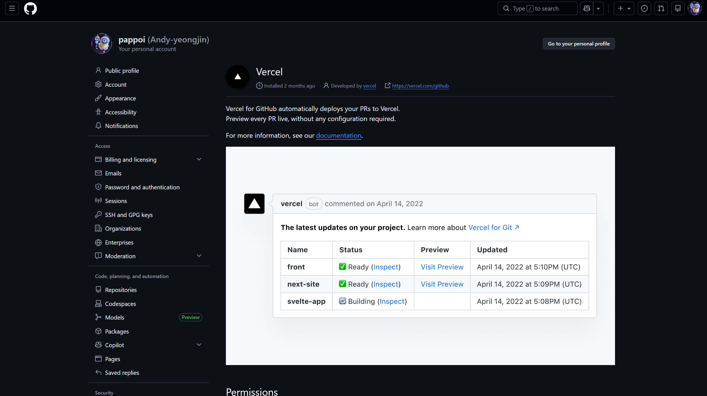
② 본인 계정 Configure
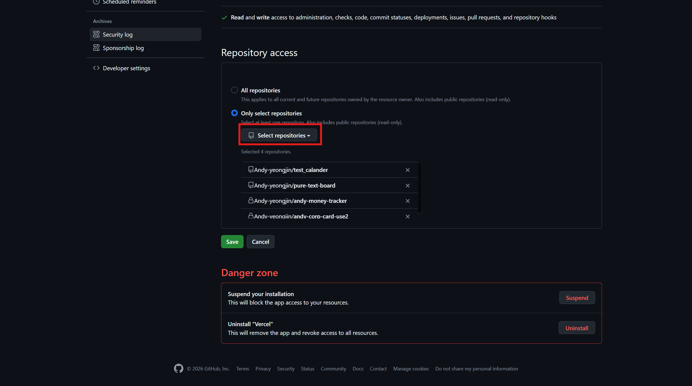
③ 저장소 추가 → Save
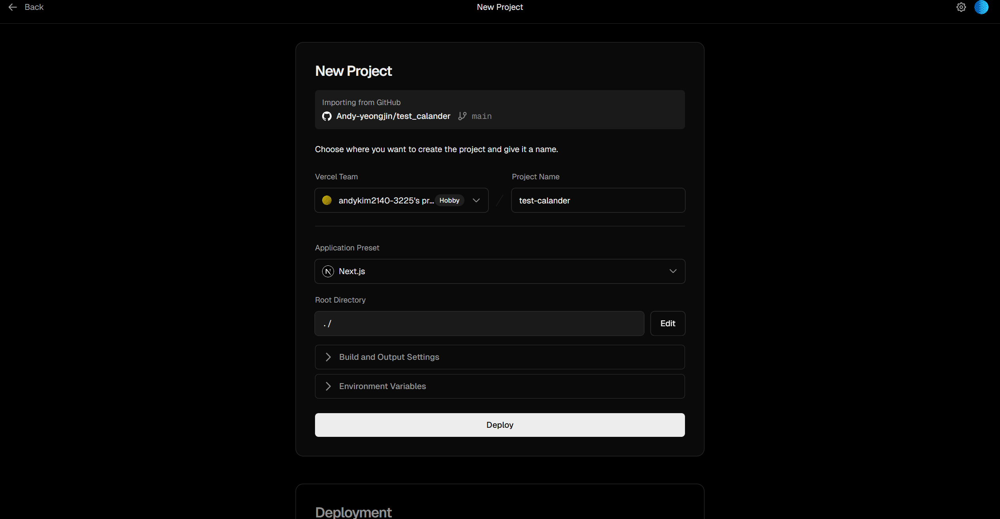
Framework가 Next.js인지 확인
Settings → Environment Variables
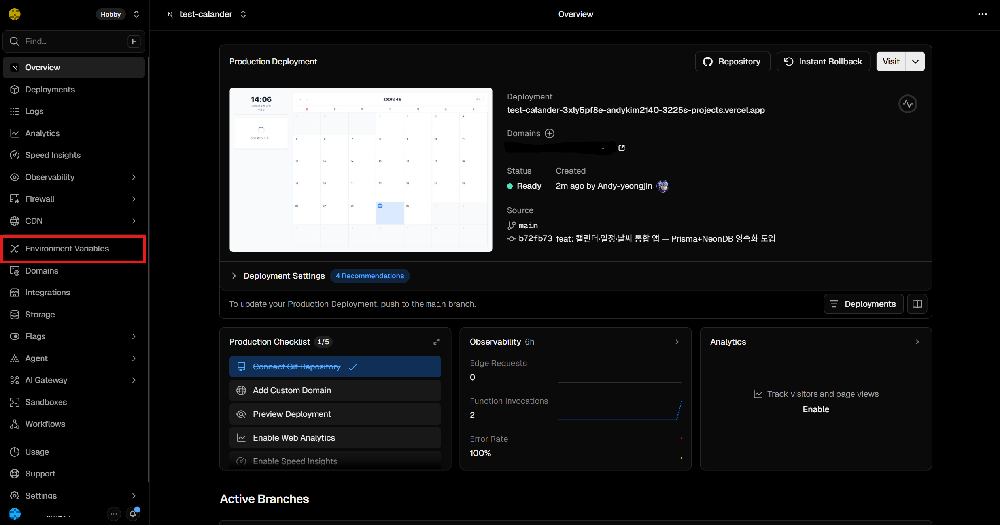
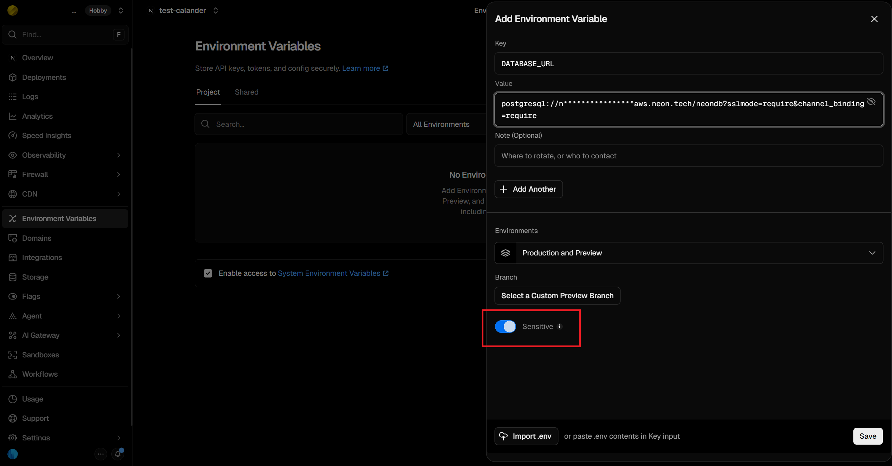
클릭하면 크게 볼 수 있어요
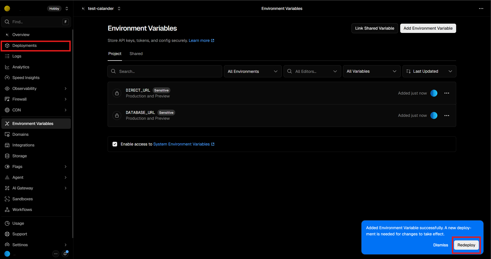
① Deployments → 최신 배포 ⋯
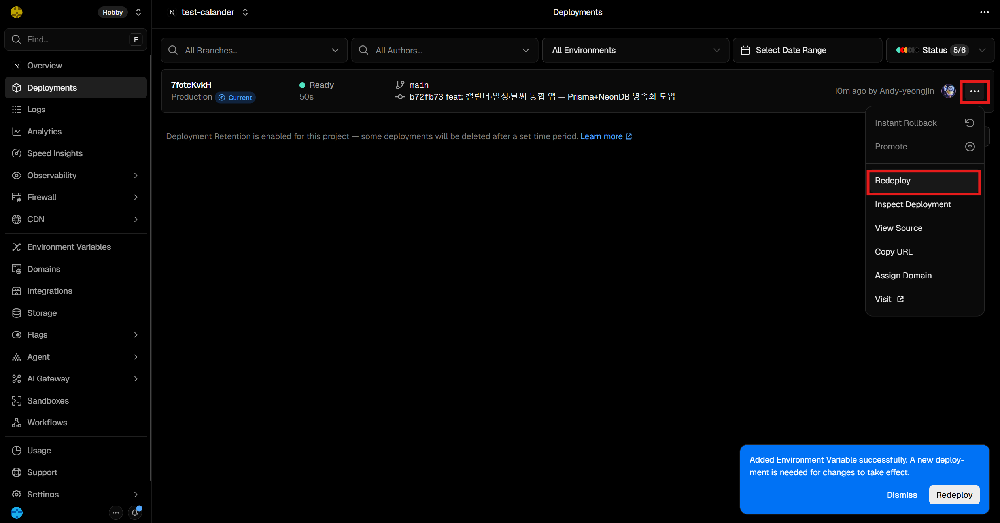
② Redeploy 클릭
✅ Redeploy 완료 후 URL 접속 → DB 연결 정상 확인!
상세 가이드 → neondb-guide.html · vercel-guide.html